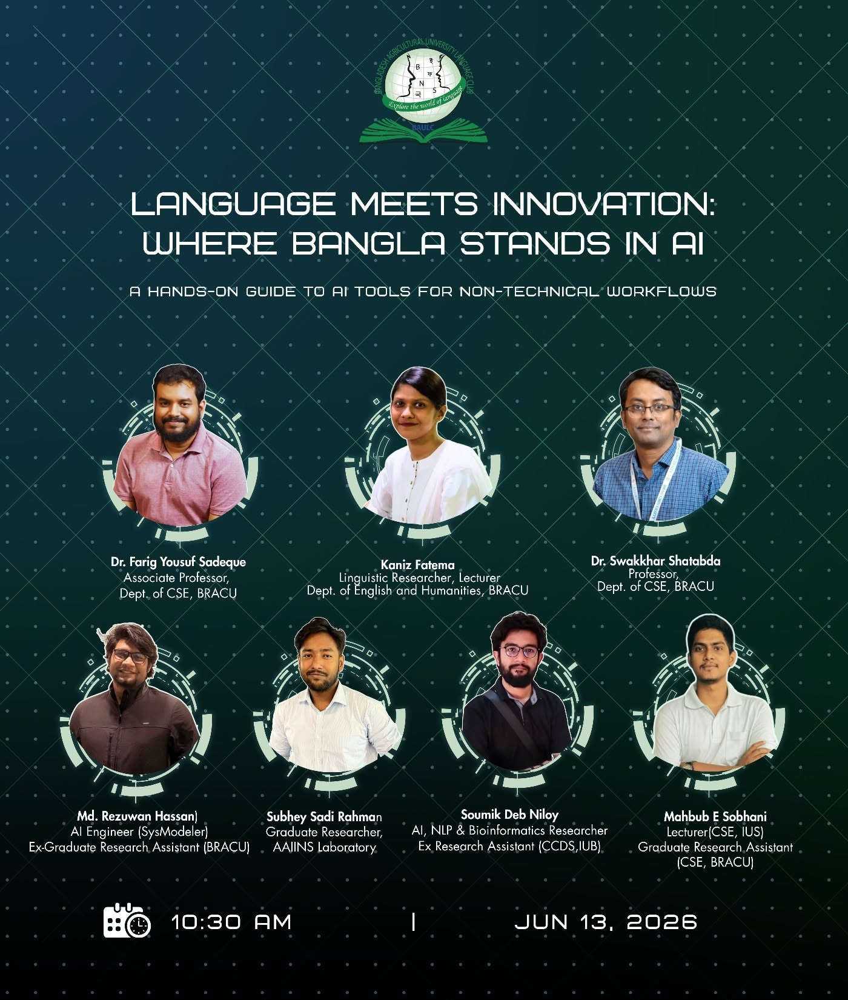
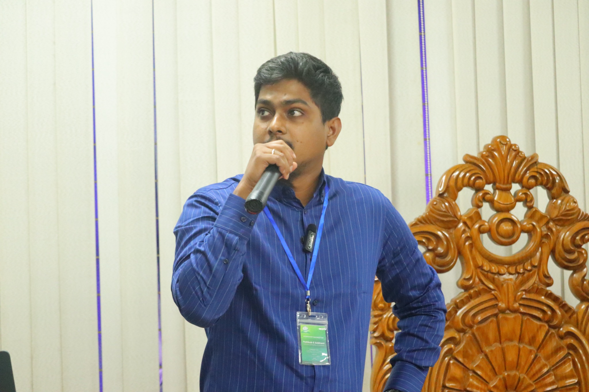
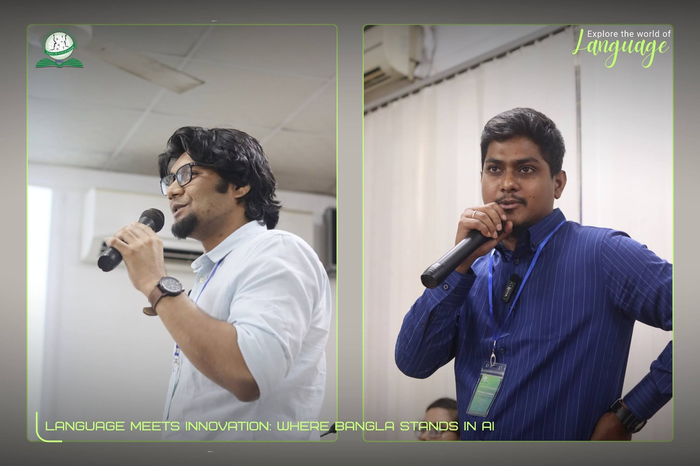
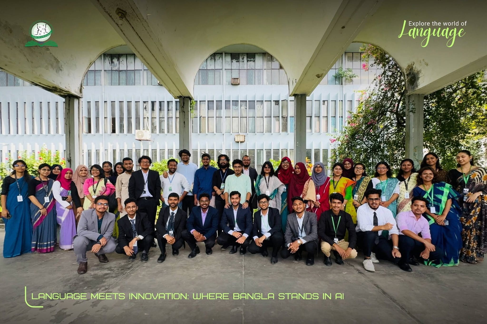

My research focuses on the efficiency of Large Language Models and
Multimodal systems, driven by a passion for uncovering
unconventional solutions to complex problems. I aim to fully engage
myself in exploring neural architectures for meaningful advancements
that are cognitively robust. Leveraging my background, I now seek to
expand my research ability through doctoral study to develop
next-generation AI systems.
Seeking Grad Opportunities | Fall 2027
Research Interests
Large Language Models
LLM architectures, training, and optimization
Multimodal LLMs
Vision-language integration and understanding
Mathematical Reasoning
Problem solving and logical inference in AI
Artificial Intelligence
General AI for complex problem solving
Education
Master of Science in Computer Science & Engineering
United International University, Dhaka,
Bangladesh
Focus: Artificial Intelligence & Machine Learning
CGPA: 3.83/4.00
Graduated: 2025
Bachelor of Science in Computer Science & Engineering
United International University, Dhaka,
Bangladesh
CGPA: 3.49/4.00
Graduated: 2021
Higher Secondary Certificate (HSC)
Dhaka Residential Model College
GPA: 5.00/5.00
Secondary School Certificate (SSC)
Monipur High School
GPA: 5.00/5.00
Professional Experience
Lecturer &
Programming Contest Coordinator
University of Scholars
2024 – Present
Leading academic courses in Data Structures, Algorithms, and
competitive programming. Coordinating programming contests and
mentoring students in problem-solving techniques.
Research
Assistant
BRAC University
2025 – Present
Conduct literature reviews on LLMs & VLMs, specializing in
mathematical and geometrical reasoning
Evaluate and benchmark model performance on geometry-based
reasoning tasks
Refine research ideas and methodologies under the guidance of
Prof. Dr. Swakkhar Shatabda
Provide technical mentorship to thesis groups, including code
development, debugging, and review
Translate academic research into practical insights to advance
ongoing AI projects
Other Positions:
Research Assistant, State University of Bangladesh
Junior Software Engineer, Orange Solutions LTD
Trainee, Bangladesh-Japan ICT Engineers' Training Program
TextEconomizer: Enhancing Lossy Text Compression with Denoising
Transformers and Entropy Coding
Information and Communication Technology Division, Government of
Bangladesh | 2024-2025
Amount: BDT 150,000 | M.Sc. Thesis Research
focusing on advanced text compression techniques using denoising
transformers and entropy coding methods.
Co-Principal Investigator
BanglaHateCorpus: A Large-Scale Bangla Benchmark for Hate Speech
Classification and a Transformer-Based Deep Learning Method
Information and Communication Technology Division, Government of
Bangladesh | 2023-2024
Amount: BDT 330,000 | Development of a
comprehensive Bangla hate speech detection corpus with
transformer-based deep learning methodology.
Research Assistant
An Agentic System to Enhance Consistency Monitoring in Evolving Documents
Improving Computer and Software Engineering Tertiary Education Project (ICSETEP)
Funding: BDT 15 million – University Grants Commission of Bangladesh, Research and Development Grant (RDG), Academy-Industry Collaboration
Awards & Achievements
2026 Diversity & Inclusion (D&I) Award – EACL 2026
Association for Computational Linguistics (ACL) USD 600
2026 Student Research Workshop (SRW) Grant – EACL 2026
Association for Computational Linguistics (ACL) USD 610
Summa Cum Laude / Dean's List
United International University - MSc Program (CGPA: 3.83)
Merit-Based Scholarship
United International University - For Academic Excellence
Perfect Academic Records
HSC and SSC with GPA 5.00 - Top 1% performers
Government Board Stipend
2007 - Government Board Stipend in Primary School
Research Publications
6+ publications in peer-reviewed conferences and journals
ICPC Contests
2025 ICPC Asia Dhaka Regional: Ranks 146, 226,
231 (Coach and Instructor)
2025 ICPC Asia Dhaka Regional Preliminary: Ranks
39, 42, 80, 881 (Coach and Instructor)
2024 ICPC Asia Dhaka Regional: Rank 201 (Coach
and Instructor)
2019 ICPC Dhaka Regional Preliminary Contest
2018 UIU Coders Combat Programming Contest
2017 ICPC Dhaka Regional Preliminary Contest
Workshops & Talks

Invited Speaker
Language Meets Innovation: Where Bangla Stands in AI
A Hands-On Guide to AI Tools for Non-Technical Workflows
Bangladesh Agricultural University,
Mymensingh
June 13, 2026 · 10:30 AM
Resource Person, alongside faculty and
researchers from BRAC University
Conducted a hands-on workshop introducing practical AI tools for
non-technical workflows, with a focus on the current state and
opportunities of Bangla language technology in modern AI systems.



Publications & Research Work
EMNLP2026
Many Dialects, Many Languages, One Cultural Lens: Evaluating Multilingual VLMs for Bengali Culture Understanding Across Historically Linked Languages and Regional Dialects
EMNLP 2026 (Findings) | Conference Paper
Bangla culture is richly expressed through region, dialect, history, food, politics, media,
and everyday visual life, yet it remains underrepresented in multimodal evaluation. To address this gap, we introduce BANGLAVERSE, a
culturally grounded benchmark for evaluating
multilingual vision–language models (VLMs)
on Bengali culture across historically linked
languages and regional dialects. Built from
1,152 manually curated images across nine domains, the benchmark supports visual question
answering and captioning, and is expanded into
four languages and five Bangla dialects, yielding ∼32.2K artifacts. Our experiments show
that evaluating only standard Bangla overestimates true model capability: performance
drops under dialectal variation, especially for
caption generation, while historically linked
languages such as Hindi and Urdu retain some
cultural meaning but remain weaker for structured reasoning. Across domains, the main bottleneck is missing cultural knowledge rather
than visual grounding alone, with knowledgeintensive categories. These findings position
BANGLAVERSE as a more realistic test bed for
measuring culturally grounded multimodal understanding under linguistic variation.
@misc{sayeedi2026dialectslanguagesculturallens,
title={Many Dialects, Many Languages, One Cultural Lens: Evaluating Multilingual VLMs for Bengali Culture Understanding Across Historically Linked Languages and Regional Dialects},
author={Nurul Labib Sayeedi and Md. Faiyaz Abdullah Sayeedi and Shubhashis Roy Dipta and Rubaya Tabassum and Ariful Ekraj Hridoy and Mehraj Mahmood and Mahbub E Sobhani and Md. Tarek Hasan and Swakkhar Shatabda},
year={2026},
eprint={2603.21165},
archivePrefix={arXiv},
primaryClass={cs.CL},
url={https://arxiv.org/abs/2603.21165},
note={Accepted at EMNLP 2026 (Findings)},
}
Overview of the BANGLAVERSE dataset and experimental setup. The figure shows the two task types, example annotations for each task, artifacts generation and evaluation pipeline with multiple metrics.
LREC2026
Meaning Over Morphology: A Multi-Metric Benchmark of LLMs for Bangla
Dialect Translation
DialRes Workshop @ LREC 2026 | Conference Paper
Regional dialects of Bangla, such as Sylheti and Chittagonian, pose
significant challenges for natural language processing due to their
low-resource nature and substantial linguistic variation from standard
Bangla. In this work, we present a systematic evaluation of eight
open-source LLMs for translating fifteen distinct Bangla dialects into
standard Bangla. To achieve this comprehensive coverage, we utilize a
combination of established benchmarks and a novel dataset curated from
an ongoing regional linguistic project. We assess model performance
using a multi-metric framework that combines exact-match and error-rate
evaluations such as, Averaged BLEU, WER, and CER with embedding-based
semantic metrics including BERTScore, METEOR, and COMET. Additionally,
we perform a detailed dialect-level linguistic analysis to identify the
deep-seated structural, orthographic, and semantic barriers inherent to
dialectal translation. Our study highlights the strengths and
limitations of current open-source models, provides empirical insights
for future dialect-aware fine-tuning, and contributes a reproducible
benchmark for the research community.
@inproceedings{niloy-etal-2026-meaning,
title = "Meaning Over Morphology: A Multi-Metric Benchmark of {LLM}s for {B}angla Dialect Translation",
author = "Niloy, Soumik Deb and
Rahman, Subhey Sadi and
E Sobhani, Mahbub and
Alam, Md. Golam Rabiul and
Sadeque, Farig Yousuf and
Hassan, Md. Rezuwan",
booktitle = "Proceedings of the First Workshop on Dialects in {NLP} {---} A Resource Perspective",
month = may,
year = "2026",
address = "Palma de Mallorca",
publisher = "Association for Computational Linguistics",
url = "https://aclanthology.org/2026.dialres-1.24/",
doi = "10.63317/3h8y7fs2zbq4",
pages = "238--255"
}
Overview of the benchmark pipeline. Regional Bangla data from
multiple sources is converted into a unified JSON format
(district, regional Bangla, standard Bangla, dataset source),
then filtered, cleaned, and validated to build the RSBC corpus
covering fifteen distinct dialects. Regional sentences are
translated into standard Bangla by eight open-source LLMs, and
model outputs are compared against gold-standard references
using a multi-metric evaluation framework combining exact-match
and error-rate measures (Averaged BLEU, WER, CER) with
embedding-based semantic metrics (BERTScore, METEOR, COMET),
complemented by a dialect-level linguistic analysis.
EACL2026
MathMist: A Parallel Multilingual Benchmark Dataset for Mathematical
Problem Solving and Reasoning
EACL 2026 | Conference Paper
Mathematical reasoning remains one of the most challenging domains for
large language models (LLMs), requiring not only linguistic
understanding but also structured logical deduction and numerical
precision. While recent LLMs demonstrate strong general-purpose
reasoning abilities, their mathematical competence across diverse
languages remains underexplored. Existing benchmarks primarily focus on
English or a narrow subset of high-resource languages, leaving
significant gaps in assessing multilingual and cross-lingual
mathematical reasoning. To address this, we introduce MathMist, a
parallel multilingual benchmark for mathematical problem solving and
reasoning. MathMist encompasses over 21K aligned question-answer pairs
across seven languages, representing a balanced coverage of high-,
medium-, and low-resource linguistic settings. The dataset captures
linguistic variety, multiple types of problem settings, and solution
synthesizing capabilities. We systematically evaluate a diverse suite of
models, including open-source small and medium LLMs, proprietary
systems, and multilingual-reasoning-focused models, under zero-shot,
chain-of-thought (CoT), and code-switched reasoning paradigms. Our
results reveal persistent deficiencies in LLMs' ability to perform
consistent and interpretable mathematical reasoning across languages,
with pronounced degradation in low-resource settings. All the codes and
data are available at GitHub: https://github.com/mahbubhimel/MathMist
@article{sobhani2025mathmist,
title={MathMist: A Parallel Multilingual Benchmark Dataset for Mathematical Problem Solving and Reasoning},
author={Sobhani, Mahbub E and Sayeedi, Md Faiyaz Abdullah and Mohiuddin, Tasnim and Islam, Md Mofijul and Shatabda, Swakkhar},
journal={arXiv preprint arXiv:2510.14305},
year={2025}
}
Overview of MATHMIST data creation and evaluation pipeline. (Left)
Data Sourcing and corpus creation uses Gemini OCR on textbooks,
stores data to JSONL, and applies human verification. (Center)
Synthetic data generation encompasses Multiple Choice Question
(MCQ) generation, Cross-Lingual Translation, and Solution
Perturbation. (Right) The evaluation process tests various LLMs
under different prompt settings.
EACL2026
Do Multi-Agents Solve Better Than Single? Evaluating Agentic Frameworks
for Diagram-Grounded Geometry Problem Solving and Reasoning
EACL 2026 | Conference Paper
Diagram-grounded geometry problem solving is a critical benchmark for
multimodal large language models (MLLMs), yet the benefits of
multi-agent design over single-agent remain unclear. We systematically
compare single-agent and multi-agent pipelines on four visual math
benchmarks: Geometry3K, MathVerse, OlympiadBench, and We-Math. For
open-source models, multi-agent consistently improves performance. For
example, Qwen-2.5-VL (7B) gains +6.8 points and Qwen-2.5-VL (32B) gains
+3.3 on Geometry3K, and both Qwen-2.5-VL variants see further gains on
OlympiadBench and We-Math. In contrast, the closed-source
Gemini-2.0-Flash generally performs better in single-agent mode on
classic benchmarks, while multi-agent yields only modest improvements on
the newer We-Math dataset. These findings show that multi-agent
pipelines provide clear benefits for open-source models and can assist
strong proprietary systems on newer, less familiar benchmarks, but
agentic decomposition is not universally optimal. All code, data, and
reasoning files are available at
https://github.com/faiyazabdullah/Interpreter-Solver
@article{sobhani2025multi,
title={Do Multi-Agents Solve Better Than Single? Evaluating Agentic Frameworks for Diagram-Grounded Geometry Problem Solving and Reasoning},
author={Sobhani, Mahbub E and Sayeedi, Md Faiyaz Abdullah and Alam, Mohammad Nehad and Progga, Proma Hossain and Shatabda, Swakkhar},
journal={arXiv preprint arXiv:2512.16698},
year={2025}
}
(a) An Interpreter Agent generates formal predicates from images
and questions using VLMs. (b) A Solver Agent then solves the
problem using these predicates as LLM input.
IJCNLP-AACL2025
CodeMist: A Transformer-Based Framework for Bangla Instruction-to-Code
Generation
Bangla Language Processing Workshop 2025 | Conference Paper
We propose CodeMist, a hybrid framework for Bangla-to-Python code
generation, focusing on enhancing code accuracy through a two-stage
pipeline of generation and debugging. In the development phase,
standalone models such as TigerLLM and StarCoder achieved low accuracies
of 27% and 24%, respectively, while advanced models like
Gemini-1.5-flash and Gemma reached 60% and 64%. Pairing Gemma with the
GPT-OSS debugger resulted in a substantial improvement to 99.75%,
emphasizing the importance of a dedicated debugging stage. In the test
phase on unseen data, GPT-OSS alone achieved 67%, which increased to 71%
with self-debugging. The highest performance of 84% was achieved by
combining Gemini-2.5-flash as the generator with GPT-OSS for debugging.
These results demonstrate that integrating a strong generative model
with an effective debugging component produces superior and robust code
generation outcomes, outperforming existing approaches such as TigerLLM.
The full implementation of the framework is publicly available at
https://github.com/ fahmid-juboraj/Code_generation.
@inproceedings{juboraj2025bracucl,
title = "{BRACU}{\_}{CL} at {BLP}-2025 Task 2: {C}ode{M}ist: A Transformer-Based Framework for {B}angla Instruction-to-Code Generation",
author = "Juboraj, Md. Fahmid-Ul-Alam and Niloy, Soumik Deb and E Sobhani, Mahbub and Sadeque, Farig",
editor = "Alam, Firoj and Kar, Sudipta andChowdhury, Shammur Absar and Hassan, Naeemul and Prince, Enamul Hoque and Tasnim, Mohiuddin and Rony, Md Rashad Al Hasan and Rahman, Md Tahmid Rahman",
booktitle = "Proceedings of the Second Workshop on Bangla Language Processing (BLP-2025)",
month = dec,
year = "2025",
address = "Mumbai, India",
publisher = "Association for Computational Linguistics",
url = "https://aclanthology.org/2025.banglalp-1.67/",
pages = "656--662",
ISBN = "979-8-89176-314-2"
}
(a) A Chain-of-Thought prompt combines a natural-language
instruction in Bangla with a function prototype, which is provided
to the Generator to produce candidate implementations. (b) A
Debugger constructs a Chain-of-Thought prompt with failure
details, and debugging LLMs are engaged to iteratively repair and
re-evaluate the generated code, where (tick) denotes correct code
and (cross) denotes faulty code.
IEEE2024
An Enhanced Text Compression Approach Using Transformer-based Language
Models
2024 IEEE Region 10 Symposium | Conference Paper
Text compression shrinks textual data while keeping crucial information,
eradicating constraints on storage, bandwidth, and computational
efficacy. The integration of lossless compression techniques with
transformer-based text decompression has received negligible attention,
despite the increasing volume of English text data in communication. The
primary barrier in advancing text compression and restoration involves
optimizing transformer-based approaches with efficient preprocessing and
integrating lossless compression algorithms. We propose a
transformer-based method named RejuvenateFormer for text decompression,
addressing prior issues by harnessing a new preprocessing technique and
a lossless compression method. Our meticulous pre-processing technique
incorporating the Lempel-Ziv-Welch algorithm achieves compression ratios
of 12.57, 13.38, and 11.42 on the BookCorpus, EN-DE, and EN-FR corpora,
thus showing state-of-the-art compression ratios compared to other deep
learning and traditional approaches.
@inproceedings{rahman2024enhanced,
title={An Enhanced Text Compression Approach Using Transformer-based Language Models},
author={Rahman, Chowdhury Mofizur and Sobhani, Mahbub E and Rodela, Anika Tasnim and Shatabda, Swakkhar},
booktitle={2024 IEEE Region 10 Symposium (TENSYMP)},
pages={1--6},
year={2024},
organization={IEEE}
}
(Top) Each corpus undergoes vowel removal, and the compression
ratio is calculated using the compressed representation. The text
is then reverted to its earliest form without vowels. (Bottom)
After tokenization, the RejuvenateFormer is trained on each
corpus, to proficiently generate expected outcomes.
EMNLP2023
Advancing bangla punctuation restoration by a monolingual
transformer-based method and a large-scale corpus
Bangla Language Processing Workshop 2023 | Conference Paper
Punctuation restoration is the endeavor of reinstating and rectifying
missing or improper punctuation marks within a text, thereby eradicating
ambiguity in written discourse. The Bangla punctuation restoration task
has received little attention and exploration, despitethe rising
popularity of textual communication in the language. The primary
hindrances in the advancement of the task revolve aroundthe utilization
of transformer-based methods and an openly accessible extensive corpus,
challenges that we discovered remainedunresolved in earlier efforts. In
this study, we propose a baseline by introducing a mono-lingual
transformer-based method named Jatikarok, where the effectiveness of
transfer learning has been meticulously scrutinized, and a large-scale
corpus containing 1.48M source-target pairs to resolve the previous
issues. The Jatikarok attains accuracy rates of 95.2%, 85.13%, and
91.36% on the BanglaPRCorpus, Prothom-Alo Balanced, and BanglaOPUS
corpora, thereby establishing itself as the state-of-the-art method
through its superior performance compared to BanglaT5 and T5-Small.
Jatikarok and BanglaPRCorpus are publicly available at:
https://github.com/mehedihasanbijoy/Jatikarok-and-BanglaPRCorpus
@inproceedings{bijoy2023advancing,
title={Advancing Bangla Punctuation Restoration by a Monolingual Transformer-Based Method and a Large-Scale Corpus},
author={Bijoy, Mehedi Hasan and Faria, Mir Fatema Afroz and Sobhani, Mahbub E and Ferdoush, Tanzid and Shatabda, Swakkhar},
booktitle={The First Workshop on Bangla Language Processing (BLP-2023)},
pages={18},
year={2023}
}
(Top) Jatikarok is initially trained on the Bangla Grammatical
Error Correction (BGEC) task. (Middle) The insights acquired
during the BGEC training are preserved for subsequent knowledge
transfer to the Bangla Punctuation Restoration (BPR) task.
(Bottom) Jatikarok is then fine-tuned on BPR corpora, leveraging
the knowledge gleaned from the BGEC task.
ARRUnder Review
Time Present and Time Past: Benchmarking Large Language Models on
Temporally Evolving Document Understanding
ARR August Cycle 2026 | Conference Paper | Under Review
Evolving documents, such as laws, tax codes, and software documentation,
are amended, replaced, and sometimes reverted over time, so a question
has different correct answers at different dates. In contrast to
encyclopedic knowledge, where an old fact is simply overwritten, an
amendment is itself an official text that states what it replaces and
when it takes effect, and the earlier version stays correct for its
validity period. The central challenge is therefore version resolution,
that is, identifying the version in force on the queried date. Existing
temporal QA datasets treat time only as an annotation, so version
resolution stays untested. We present TIDE, an expert-verified benchmark
of 3,050 QA pairs over 644 official customs instruments issued between
1969 and 2025 by the Government of Bangladesh, covering eight task types
over deeply code-mixed documents that are heterogeneous in layout and
dated in two calendars. In addition, we evaluate nine recent LLMs under a
single protocol across parametric, gold-context, and retrieval access,
scored by a three-judge LLM council with a hard date gate separating
correct meaning from correct time. The best macro-averaged accuracy is
only 68.5%. Resolving a version from an implicit date reaches 59.7%, and
detecting that the supplied version does not govern the query reaches
only 26.7%. Models are more likely to find correct versions than to
reject incorrect ones, and they tend to follow a confident parametric
answer over the supplied authoritative text. All code and data are
available at https://github.com/icsetepa44/TIDE
@misc{sobhani2026timepresenttimepast,
title={Time Present and Time Past: Benchmarking Large Language Models on Temporally Evolving Document Understanding},
author={Mahbub E Sobhani and Md. Faiyaz Abdullah Sayeedi and Fahmid Hasan Chowdhury and Md Adnan Arefeen and Farig Sadeque and Md. Faizul Bari and Swakkhar Shatabda},
year={2026},
eprint={2608.08512},
archivePrefix={arXiv},
primaryClass={cs.AI},
url={https://arxiv.org/abs/2608.08512},
}
Overview of the TIDE benchmark. (a) Corpus construction parses 644
official customs instruments issued between 1969 and 2025 (3 Acts,
20 GOs, 609 SROs, 12 Rules) into clauses, tables, and metadata,
then clusters them by entity and concept to build amendment
threads and generate temporally grounded question-answer pairs,
verified by 13 volunteer annotators to yield 3,050 expert-verified
QA items. (b) An amendment timeline illustrates the core
challenge: each amendment states what it replaces and when it
takes effect, so every version stays correct for its own validity
period, and temporal drift emerges between the benchmark cut-off
and the model knowledge cut-off. (c) Eight task types probe
version resolution from different angles, including temporal MCQ,
relative-time QA, event sorting, perturbation detection, and
context misalignment. (d) Evaluation runs nine recent LLMs under
parametric, gold-context, and RAG access, scored by a three-judge
LLM council with a hard date gate that zeroes out answers with the
wrong effective date.
Neural Networks2026
TextEconomizer: Enhancing lossy text compression with denoising transformers and entropy coding
Lossy text compression reduces data size while preserving core meaning, making it well-suited for tasks like summarization, automated analysis, and digital archives where exact fidelity is less critical. Despite the dominance of transformer-based models in language modeling, the integration of context vectors and lossless entropy coding into Sequence-to-Sequence (Seq2Seq) text generation remains underexplored. A key challenge lies in identifying the most informative context vectors from the encoder output and incorporating entropy coding into the transformer framework to enhance storage efficiency while maintaining high-quality outputs, even in the presence of noisy text. Previous studies have primarily focused on near-lossless token generation, often overlooking space efficiency. In this paper, we introduce TextEconomizer, an encoder-decoder framework paired with a transformer neural network. This framework utilizes its latent representation to reduce variable-sized inputs by 50% to 80%, without prior knowledge of dataset dimensions. Our model achieves competitive compression ratios by incorporating entropy coding, while delivering near-perfect text quality, as assessed by Bilingual Evaluation Understudy (BLEU), Recall-Oriented Understudy for Gisting Evaluation (ROUGE), Metric for Evaluation of Translation with Explicit ORdering (METEOR), and semantic similarity scores. Notably, TextEconomizer operates with approximately 153× fewer parameters than comparable models, achieving a compression ratio of 5.39× without sacrificing semantic quality. Additionally, we evaluate our framework by implementing a Long Short-Term Memory (LSTM)-based autoencoder, commonly used in image compression, and by integrating advanced modules within the transformer architecture as alternatives to conventional techniques. Our autoencoder achieves a state-of-the-art compression ratio of 67× with 196× fewer parameters, while our modified transformer, LLaMAFormer, achieves a 263-fold reduction in parameters compared to ICAE while maintaining competitive text quality. The TextEconomizer framework significantly surpasses existing transformer-based models in balancing memory efficiency and high-fidelity outputs, marking a breakthrough in lossy compression with optimal space utilization.
@article{SOBHANI2026109111,
title = {TextEconomizer: Enhancing lossy text compression with denoising transformers and entropy coding},
journal = {Neural Networks},
volume = {203},
pages = {109111},
year = {2026},
issn = {0893-6080},
doi = {https://doi.org/10.1016/j.neunet.2026.109111},
url = {https://www.sciencedirect.com/science/article/pii/S089360802600571X},
author = {Mahbub E Sobhani and Anika Tasnim Rodela and Chowdhury Mofizur Rahman and Dewan Md. Farid and Swakkhar Shatabda},
keywords = {TextEconomizer, Transformer, Text compression, Encoder, Decoder, Auto-encoder, Denoising transformer},
}
(Left) Illustration of a conventional transformer encoder-decoder architecture where the latent representation retains the full dimensionality of the input sequence, often resulting in redundant calculations. (Right) Our proposed framework is designed for efficient text reconstruction. The model encodes noisy input text into a sequence of context vectors (h₀, ..., hₙ). A probabilistic sorting prioritizes these vectors based on information density, followed by a Top_k selection strategy to isolate the most salient Kizuki vectors. These vectors are then compressed using Entropy Coding (LZMA) for further memory efficiency before being decoded to generate the corrected output (ŵ). This pipeline effectively reduces memory overhead without sacrificing reconstruction quality, enabling more efficient downstream decoding and transmission.
Crop Design2026
CropSynergy: Harnessing IoT Solutions for Smart and Efficient Crop
Management
Agriculture has been a cornerstone of human civilization and continues
evolving to meet the growing global population’s demands. In an era of
rapid technological advancement, the integration of smart agriculture,
also known as smart farming or precision farming, has become essential
for sustainable agricultural practices. This approach uses the Internet
of Things (IoT) and Artificial Intelligence (AI) to improve data
collection and analysis, facilitating real-time monitoring of crop
health, soil conditions, irrigation, and comprehensive farm management.
By incorporating IoT, farmers can make informed decisions, optimize
resource use, and improve crop yields. This study explores the scope of
integrating IoT into crop management to optimize traditional
crop-related issues and to improve the quality, production, and
marketing process. Our in-depth analysis illustrates the IoT
architecture, the IoT in smart farming, and how IoT sensors and devices
collect real-time data on soil moisture, temperature, humidity, and
other environmental factors, which are then processed using cloud
computing platforms and stored accordingly. After conducting an
exhaustive search with sorted keywords aligned with our research
interests, we have identified more than a thousand research articles. A
further filtering approach is applied based on inclusion and exclusion
criteria to select a significant number of well-suited articles, which
are thoroughly analyzed in the development of this systematic review
paper. The growing number of literature in this field has created a vast
area for exploration. In response, we have thoroughly studied all the
aspects of IoT and have proposed a novel taxonomy for IoT to
systematically classify and analyze key aspects like Sensors, Actuators,
Development Board, and Communication. We examine the application of IoT
in crop management, emphasizing its benefits, challenges, and future
potential. In addition, we analyze key IoT components, such as sensors,
data analytics, and decision-making tools, and explore their role in
enhancing agricultural sustainability, economic viability, and food
security. Finally, we concluded our study by addressing the challenges
and outlining future directions for further advancement.
@article{EYASIN2025100127,
title = {CropSynergy: Harnessing IoT Solutions for Smart and Efficient Crop Management},
journal = {Crop Design},
pages = {100127},
year = {2025},
issn = {2772-8994},
doi = {https://doi.org/10.1016/j.cropd.2025.100127},
url = {https://www.sciencedirect.com/science/article/pii/S2772899425000333},
author = {Md Sanzid Hossain Eyasin and Mahbub E. Sobhani and Shamima Nasrin and Abu Sadat {Al Rafi} and A.K.M. {Muzahidul Islam}}
}
Imbalanced intrusion classification is a complex and challenging task as
there are few number of instances/intrusions generally considered as
minority instances/intrusions in the imbalanced intrusion datasets. Data
sampling methods such as over-sampling and under-sampling methods are
commonly applied for dealing with imbalanced intrusion data. In
over-sampling, synthetic minority instances are generated e.g. SMOTE
(Synthetic Minority Over-sampling Technique) and on the contrary,
under-sampling methods remove the majority-class instances to create
balanced data e.g. random under-sampling. Both over-sampling and
under-sampling methods have the disadvantages as over-sampling technique
creates overfitting and under-sampling technique ignores a large portion
of the data. Ensemble learning in supervised machine learning is also a
common technique for handling imbalanced data. Random Forest and Bagging
techniques address the overfitting problem, and Boosting (AdaBoost)
gives more attention to the minority-class instances in its iterations.
In this paper, we have proposed a method for selecting the most
informative instances that represent the overall dataset. We have
applied both over-sampling and under-sampling techniques to balance the
data by employing the majority and minority informative instances. We
have used Random Forest, Bagging, and Boosting (AdaBoost) algorithms and
have compared their performances. We have used decision tree (C4.5) as
the base classifier of Random Forest and AdaBoost classifiers and naïve
Bayes classifier as the base classifier of the Bagging model. The
proposed method Adaptive TreeHive addresses both the issues of
imbalanced ratio and high dimensionality, resulting in reduced
computational power and execution time requirements. We have evaluated
the proposed Adaptive TreeHive method using five large-scale public
benchmark datasets. The experimental results, compared to data balancing
methods such as under-sampling and over-sampling, exhibit superior
performance of the Adaptive TreeHive with accuracy rates of 99.96%,
85.65%, 99.83%, 99.77%, and 95.54% on the NSL-KDD, UNSW-NB15,
CIC-IDS2017, CSE-CIC-IDS2018, and CICDDoS2019 datasets, respectively,
establishing the Adaptive TreeHive as a superior performer compared to
the traditional ensemble classifiers.
@article{sobhani2025adaptive,
title={Adaptive TreeHive: Ensemble of trees for enhancing imbalanced intrusion classification},
author={Sobhani, Mahbub E and Rodela, Anika Tasnim and Farid, Dewan Md},
journal={PLoS One},
volume={20},
number={9},
pages={e0331307},
year={2025},
publisher={Public Library of Science San Francisco, CA USA}
}
Adaptive TreeHive groups feature by gain ratio, build randomized
trees on each subset, and merge their outputs via weighted
majority voting. NSL-KDD, UNSW-NB15, CIC-IDS2017, CSE-CIC-IDS2018,
and CICDDoS2019 datasets are pre-processed, features ranked,
informative instances selected by clustering, redundancies
removed, and then split into training and testing sets. The chosen
trees (those exceeding a performance threshold) are trained on the
processed training set, assigned weights based on their error
rates, and their predictions are aggregated by weighted voting.
Performance is evaluated using accuracy, precision, recall, and
F1-score.
PLOS ONEUnder Review
BanglaHateCorpus: A large-scale Bangla benchmark for hate speech
classification and a transformer-based deep learning method.
Journal Article | Under Review
Research Methodology:
Large-scale corpus of 50,000+ annotated Bangla samples for hate
speech detection, validated through inter-annotator agreement
protocols achieving κ > 0.85.
International Journal of Network ManagementUnder Review
Data security and energy-efficiency in wireless body area networks: A
systematic review.
Journal Article | Under Review
Research Methodology:
Optimized WBAN architecture combining AES-128 encryption with
energy-efficient routing protocols, balancing security with power
constraints through adaptive techniques.